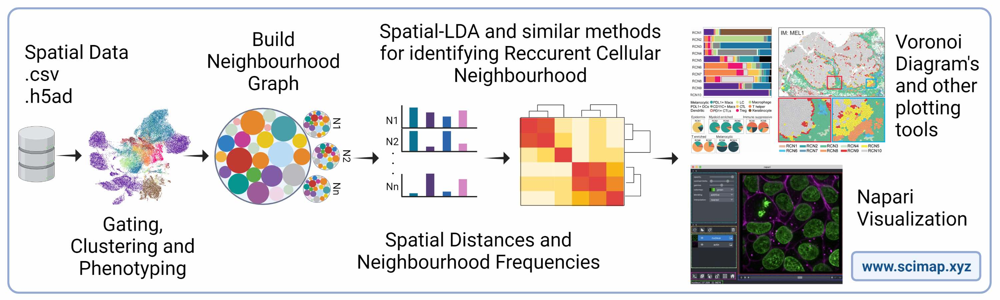

Home



Scimap is a scalable toolkit for analyzing spatial molecular data. The underlying framework is generalizable to spatial datasets mapped to XY coordinates. The package uses the anndata framework making it easy to integrate with other popular single-cell analysis toolkits. It includes preprocessing, phenotyping, visualization, clustering, spatial analysis and differential spatial testing. The Python-based implementation efficiently deals with large datasets of millions of cells.
SCIMAP development was led by Ajit Johnson Nirmal, Harvard Medical School.
Check out other tools from the Nirmal Lab.
Funding
This work was supported by the following NIH grant K99-CA256497